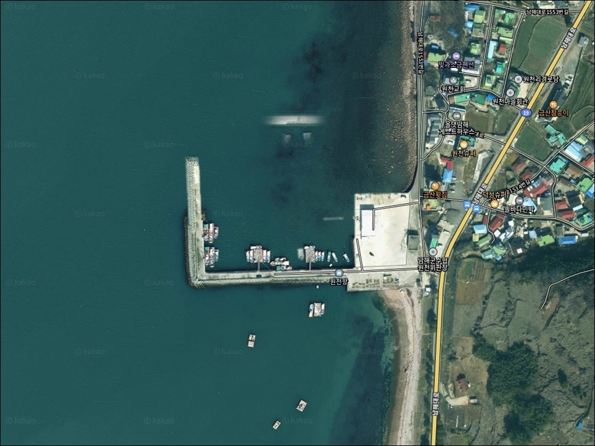
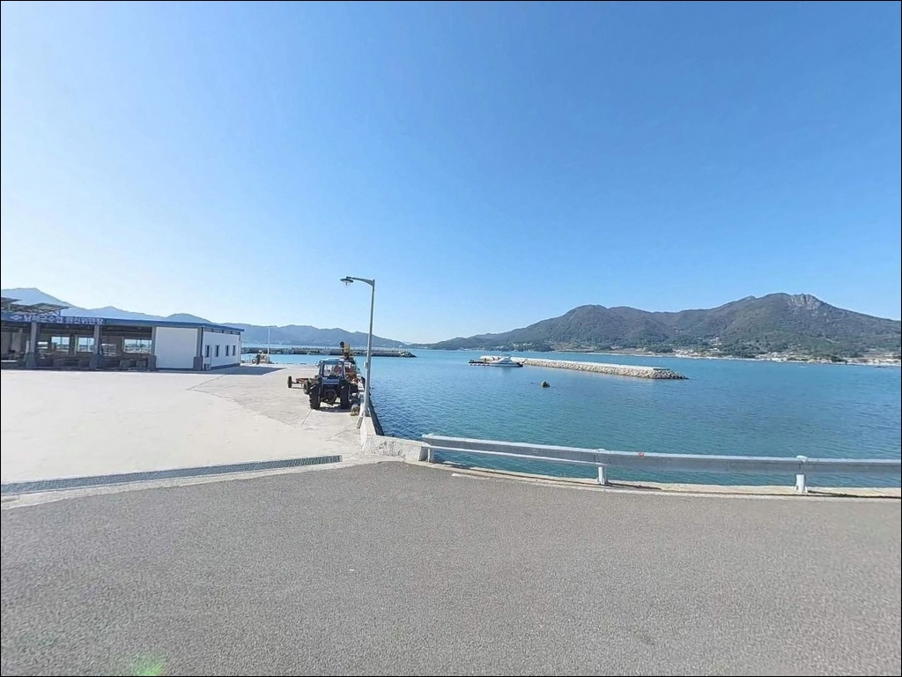
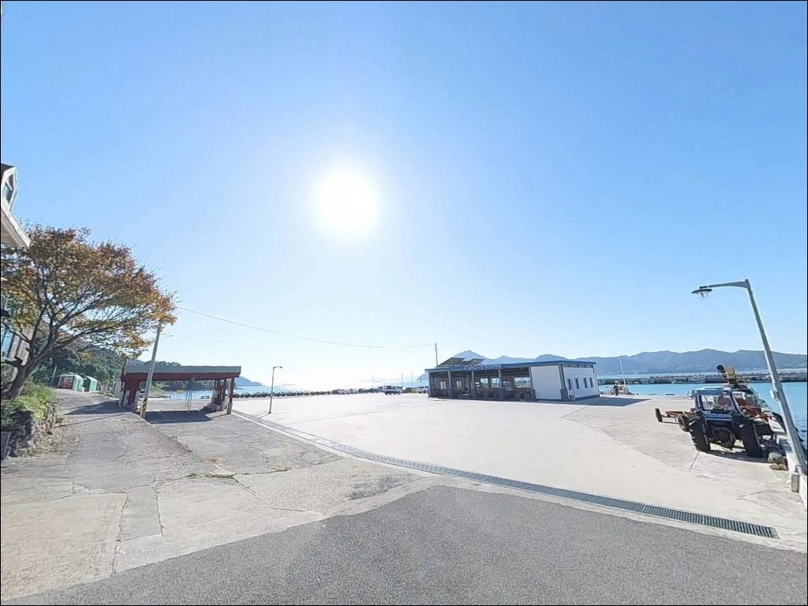
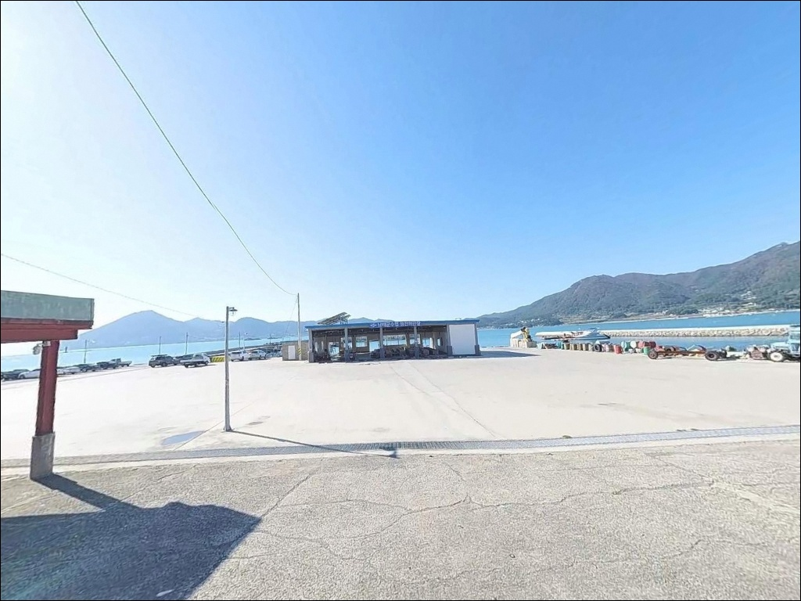
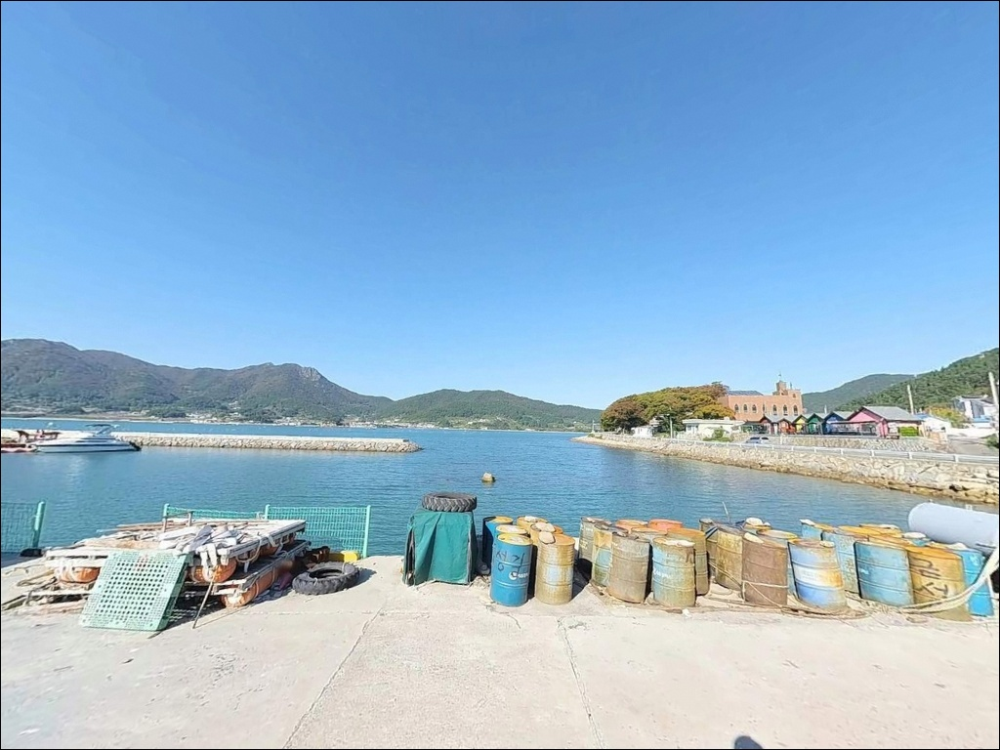
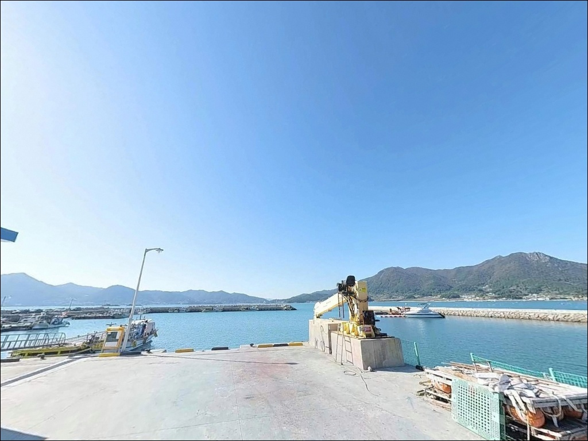
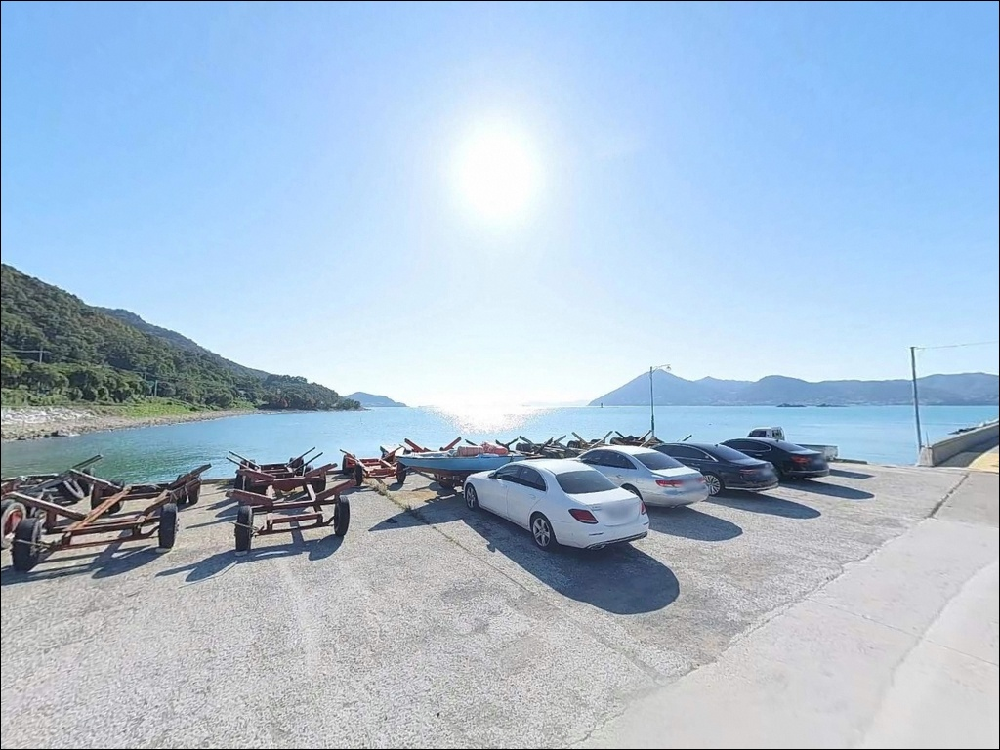
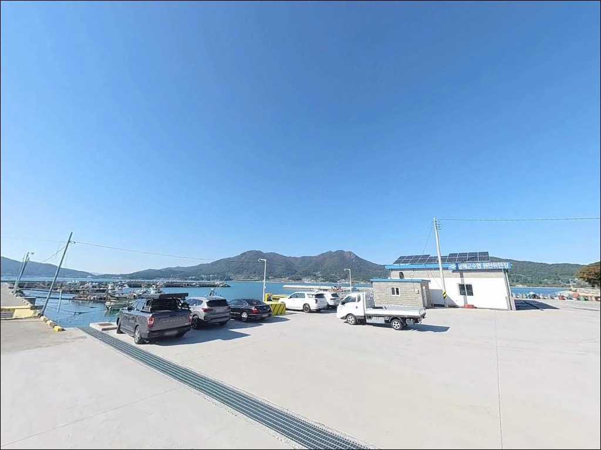
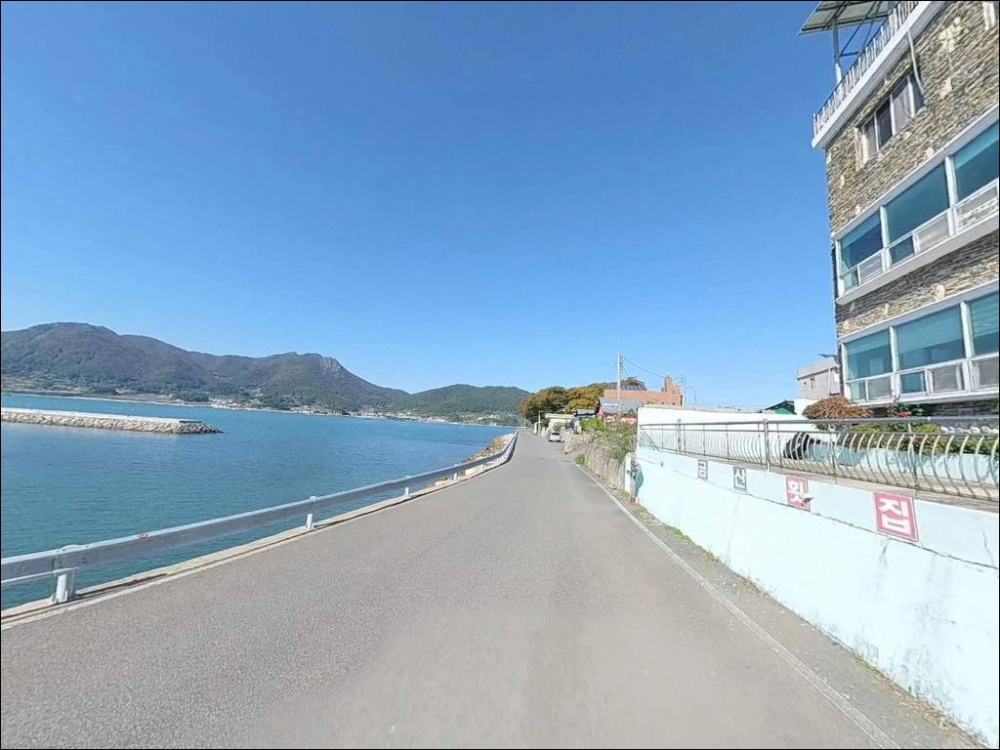

남풍 파도 밀려올 때, 남해 원천항 방파제 내외항 갈리는 수심 포인트
이 페이지에는 광고(제휴 링크 포함)가 있으며, 광고 링크를 통해 구매하면 운영자가 판매 수익 또는 수수료를 받을 수 있습니다. 포인트 사진: 카카오맵 스카이뷰·로드뷰. 이 페이지의 지도·사진 이미지는 카카오맵의 실제 서비스 이미지와 다를 수 있습니다.


포인트 안내
원천항
경남 남해군 이동면 신전리 1143-5
원천항에서 외항 쪽 자리를 잘못 잡으면
남풍 계열 파도가 올라올 때
채비를 펴기도 전에 자리를 떠야 하는 상황이
발생합니다.
내항과 외항 구분 없이 아무 자리나 들어서는 방식은
이 포인트에서 효과가 없습니다.
앵강만 안쪽에 위치한 원천항은
외해 파도 영향이 일정 부분 차단되는
내만형 구조의 지방어항입니다.
방파제를 기준으로 내항은 잔잔한 수면,
외항은 조류가 살아 있는 구간으로 나뉘며,
낚시 방식과 입장 타이밍에 따라
공략 구간도 달라지는 포인트입니다.
이 글은 원천항의 진입 동선, 차박 여건,
물때와 기상 판단 기준, 낚시 스타일별
공략 조건에 집중합니다.
조황 단정이나 특정 어종 보장은
이 글의 범위에 포함되지 않습니다.

1. 진입 동선과 차량 접근 여건
원천항은 남해대로에서 이동면 방향으로
진입해 해안 지방도로를 따라 들어오는 구조입니다.
남해대로 1553번길 일대에서 항구로 바로 연결되는
포장도로가 갖춰져 있어
승용차·SUV 기준 접근성이 양호합니다.
다만 원천항 직전 구간에서 도로 폭이 좁아지는
구간이 있어,
대형 캠핑카는 해안 코너 구간 교행 시
속도를 줄여 진행하는 것이 안전합니다.
항 내부 공간이 넓어 차량 회차가 원활하며,
승용차·SUV 기준으로는 별도의 후진 없이
회차가 가능한 구조입니다.
주차 후보는 방파제 입구 광장,
어촌계 회관 주변 콘크리트 포장 부지,
항 내 해안도로 갓길 순서로 활용하는 방식이
일반적입니다.
남해바래길 10코스 앵강다숲길의 시작점으로도
알려진 항구라
주말·성수기에는 관광 차량과 낚시 차량이
동시에 유입되는 편입니다.
이른 아침이나 평일 입장이
주차 여건 확보에 유리합니다.

2. 차박 환경과 야간 체류 여건
원천항 주변은 민가와 상가가 함께 형성된
어촌 마을 구조입니다.
야간에도 항구 내 가로등이 설치되어 있어
완전 암흑 환경은 아니며,
시야 확보 측면에서는 무리 없는 수준입니다.
완전 고립형 차박보다는
생활권과 맞닿아 있는 야간 분위기를
예상하고 입장하는 것이 맞습니다.
새벽 시간대에 어선 작업과 어민 이동이
발생할 수 있습니다.
민가 방향 소음 관리가 필요하며,
항 내 정박 구역과 어민 작업 동선을 피해
차량 위치를 잡는 것이
기본 매너입니다.
앵강만 내만형 구조 덕분에
북서·북동풍 계열 바람은 어느 정도 차단됩니다.
남풍 계열이 강하게 부는 날에는
외항 방향으로 파고가 올라오는 경우가 있으니,
기상 예보 확인 후 입장 여부를 판단하는 것이
안전한 접근입니다.


3. 주변 편의시설 및 인프라 현황
원천항 반경 1km 이내에는
신전리 일대 상가·식당이 함께 형성되어 있습니다.
항구 인근에 횟집과 멸치쌈밥 식당이
운영되고 있어,
낚시 후 현지 식사가 가능한 편입니다.
남해대로를 따라 이동면 소재지 방향으로
이동하면 카페·식당이 연속으로 분포해 있고,
차량 기준 5분 거리에
농협 하나로마트와 주유소가 위치합니다.
식수·얼음·낚시 소품 보급은
출발 전에 마무리하거나
이동면 소재지를 경유해 해결하는 방식이
효율적입니다.
응급 상황 발생 시 남해읍 방면으로
약 10km 이내에 남해군 보건의료원이 있어
의료 접근성은 군 단위 기준으로
비교적 양호한 편입니다.

4. 방문 전 반드시 챙겨야 할 준비사항
원천항 방문 전 가장 먼저 확인할 것은
물때와 기상 예보입니다.
앵강만 내만형 구조라도
외항 방파제는 남풍 계열 강풍 시
파고가 빠르게 높아지는 구간입니다.
바다타임에서 이동면 기준 물때를 확인하고,
초들물에서 중날물 타이밍을 기본 기준으로
출발 시각을 조정하는 것이 일반적인 접근입니다.
방파제 외측 테트라포드 구간은
경사가 있고 미끄럼 위험이 있습니다.
구명조끼와 낚시 전용 미끄럼 방지화는
필수 지참 항목입니다.
야간 낚시 시 헤드랜턴과 보조 광원을
반드시 챙겨야 하며,
방파제 끝단에서는 항상 안전 거리를
유지하는 것이 기본입니다.
어선 정박 동선과 어구(그물·통발) 위에
차량을 세우거나 낚시 장비를
방치하지 않는 것이 기본 매너입니다.
낚시 후 미끼 포장지·낚시줄 잔여물·음식물은
반드시 회수해 가져가야 합니다.

5. 낚시 자리 선택이 달라지는 지형 구조
원천항 방파제는 내항과 외항이 명확히 구분됩니다.
방파제 외측에는 테트라포드가 설치되어 있고,
바닥 저질은 사질과 뻘이 혼재하되
방파제 하단부에는 수중 암반(여)이 발달해 있습니다.
방파제 끝단 기준 만조 시
수심 7~9m 내외를 유지하는 구간으로,
조류 흐름이 집중되는 지점이기도 합니다.
앵강만 깊숙이 위치해 있어
조류가 급하지 않고 안정적인 수심대를
형성하는 것이 이 포인트의 특성입니다.
방파제 끝단과 항 출입구 쪽은
조류 흐름이 모이는 구간으로,
루어·원투 모두 공략 1순위 자리로
볼 수 있습니다.
내항 쪽은 야간 항내 조명 불빛이
수면에 형성되는 구간이 있습니다.
빛 번짐 경계 지점이 어종 활성 구간으로
작용하는 편이라,
워킹 루어 중심으로 공략하는 방식이
이 구간에 잘 맞습니다.
최신 조황은 출조 전
"원천항 조황" 또는 "앵강만 낚시" 키워드로
반드시 검색해보시기 바랍니다.


6. 원천항 지형에 어울리는 낚시 스타일
루어낚시는 이 포인트에서 가장 폭넓게
운용할 수 있는 방식입니다.
방파제 외측 테트라포드 주변과 끝단에서
미노우·지그헤드 웜 채비로 표층~중층을
공략하는 방식이 유효합니다.
농어는 이른 아침과 야간 시간대에
활성이 높고, 볼락은 방파제 구조물
그림자 구간에서 반응하는 패턴입니다.
원투낚시는 방파제 외항 정면으로
장타를 넣어 수심 변화 구간을
공략하는 방식이 기본입니다.
암반과 모래 경계부를 노리는 채비가 유효하며,
청갯지렁이·홍갯지렁이를 미끼로 사용합니다.
밑걸림이 적은 구간에서는 초보자도
어렵지 않게 운용할 수 있는 스타일입니다.
찌낚시는 외항 테트라포드 구간에서
조류를 태우는 방식으로 운영이 가능합니다.
부력찌 반유동 또는 전유동 채비가
이 지형에 잘 맞으며,
수중 암반(여) 주변을 정교하게 공략하는 것이
핵심 포인트입니다.
가을~겨울 시즌에는 감성돔이
외항 테트라포드 구간에서 기대할 수 있는
대상어입니다.

7. 대안 포인트와 플랜 B 동선
원천항 조류나 기상 여건이 여의치 않을 때
첫 번째 대안은
홍현리 방파제입니다.
원천항에서 약 3.9km 거리로
앵강만 내에서 가장 빠르게 이동할 수 있는
대체 포인트입니다.
방파제 구조가 유사하고 접근이 용이해
원천항 차박 공간이 포화 상태일 때
야박 후보로도 겸용이 가능합니다.
약 5.9km 거리의
가천 갯바위(다랭이마을 인근)도
루어·찌낚시 대체 공략 지점입니다.
같은 앵강만 해안선 위에 암반 저질 지형으로
원천항과 비슷한 낚시 환경을 공유합니다.
다랭이마을 관광 동선과 연결되어 있어
접근 루트 확보가 어렵지 않습니다.
조황이 전반적으로 부진한 날이라면
차량 기준 10분 내외 거리의
벽련항을 노려보는 방법도 있습니다.
노도 방면 조류가 강해
감성돔 씨알이 더 굵게 올라오는
패턴으로 알려진 포인트입니다.

내항과 외항 구분만 잘해도
원천항은 충분히 공략 가능한 포인트입니다
원투낚시·루어낚시·찌낚시를 상황에 맞게
바꿔 운용할 수 있는 낚시인이라면
원천항의 이중 구조가 오히려
선택지가 많은 포인트로 느껴질 것입니다.
방파제 끝단 조류 구간과
내항 빛 경계 라인을 나눠 공략하는 방식은
이 포인트의 지형 조건을
제대로 활용하는 방법입니다.
반면 외항 파도 여건을 사전에 확인하지 않고
남풍 강풍 날 방파제 끝단에 자리를 잡거나,
물때 계산 없이 사리 전후에 입장하면
채비 컨트롤보다 안전 확보가 먼저인
상황을 맞을 수 있습니다.
물때 확인, 기상 예보, 진입 차량 크기 점검,
이 세 가지를 갖추고 가는 것이
원천항을 제대로 쓰는 방법입니다.
주차 공간이 넉넉하고 항구 인근에
식당까지 갖춰진 원천항은,
낚시와 가벼운 차박 체류를 함께
묶어 계획하기 좋은 앵강만 포인트입니다.